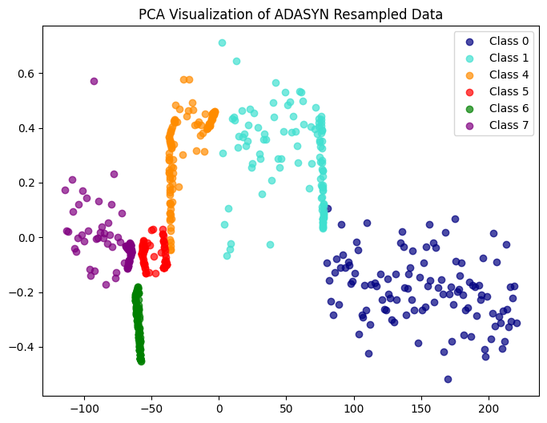
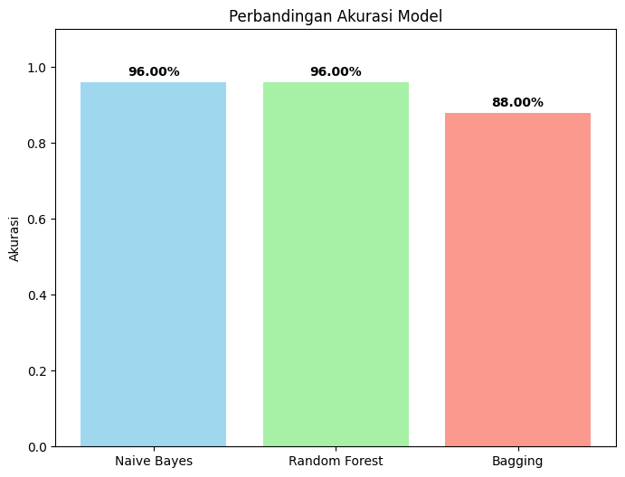

Klasifikasi ECOLI ADASYN#
import pandas as pd
import mysql.connector
conn = mysql.connector.connect(
host='127.0.0.1',
user='root',
password='',
database='ecoli'
)
df = pd.read_sql("SELECT * FROM ecoli", conn)
print("\nIsi tabel ecoli:")
print(df)
---------------------------------------------------------------------------
ModuleNotFoundError Traceback (most recent call last)
Cell In[1], line 2
1 import pandas as pd
----> 2 import mysql.connector
4 conn = mysql.connector.connect(
5 host='127.0.0.1',
6 user='root',
7 password='',
8 database='ecoli'
9 )
11 df = pd.read_sql("SELECT * FROM ecoli", conn)
ModuleNotFoundError: No module named 'mysql'
species_counts = df['localization_class'].value_counts()
print("Jumlah pada tiap kelas di kolom localization_class:")
print(species_counts)
plt.figure(figsize=(8,5))
species_counts.plot(kind='bar')
plt.xlabel("Kelas")
plt.ylabel("Jumlah Sampel")
plt.title("Jumlah Data per Kelas (localization_class)")
for i, v in enumerate(species_counts):
plt.text(i, v + 0.5, str(v), ha='center', va='bottom')
plt.show()
Jumlah pada tiap kelas di kolom localization_class:
localization_class
cp 143
im 77
pp 52
imU 35
om 20
omL 5
imS 2
imL 2
Name: count, dtype: int64
import numpy as np
unique, counts = np.unique(y, return_counts=True)
print(dict(zip(unique, counts)))
{0: 143, 1: 77, 2: 2, 3: 2, 4: 35, 5: 20, 6: 5, 7: 52}
import pandas as pd
df = pd.DataFrame(X)
df['label'] = y
min_samples = 5
valid_classes = df['label'].value_counts()[df['label'].value_counts() >= min_samples].index
df_filtered = df[df['label'].isin(valid_classes)]
X_filtered = df_filtered.drop('label', axis=1).values
y_filtered = df_filtered['label'].values
print("Distribusi kelas setelah drop:", dict(zip(*np.unique(y_filtered, return_counts=True))))
Distribusi kelas setelah drop: {0: 143, 1: 77, 4: 35, 5: 20, 6: 5, 7: 52}
import numpy as np
from sklearn.model_selection import train_test_split
from imblearn.over_sampling import ADASYN
import warnings
import matplotlib.pyplot as plt
warnings.filterwarnings("ignore", message=".*LOKY_MAX_CPU_COUNT.*")
# Split data
X_train, X_test, y_train, y_test = train_test_split(
X, y, test_size=0.2, random_state=42, stratify=y
)
# Distribusi sebelum ADASYN
unique_before, counts_before = np.unique(y_train, return_counts=True)
print("Distribusi sebelum ADASYN (y_train):", dict(zip(unique_before, counts_before)))
# Terapkan ADASYN
adasyn = ADASYN(random_state=42, n_neighbors=3)
X_train_res, y_train_res = adasyn.fit_resample(X_train, y_train)
# Distribusi setelah ADASYN
unique_after, counts_after = np.unique(y_train_res, return_counts=True)
print("Distribusi setelah ADASYN (y_train_res):", dict(zip(unique_after, counts_after)))
# === Visualisasi distribusi kelas dalam satu diagram ===
x = np.arange(len(unique_before)) # posisi kelas
width = 0.35 # lebar batang
plt.figure(figsize=(8,6))
plt.bar(x - width/2, counts_before, width, label="Sebelum ADASYN", color="skyblue")
plt.bar(x + width/2, counts_after, width, label="Sesudah ADASYN", color="orange")
plt.xticks(x, unique_before)
plt.xlabel("Kelas")
plt.ylabel("Jumlah Sampel")
plt.title("Perbandingan Distribusi Kelas Sebelum vs Sesudah ADASYN")
plt.legend()
plt.show()
Distribusi sebelum ADASYN (y_train): {0: 114, 1: 61, 4: 28, 5: 16, 6: 4, 7: 42}
Distribusi setelah ADASYN (y_train_res): {0: 114, 1: 113, 4: 115, 5: 114, 6: 114, 7: 114}
from sklearn.decomposition import PCA
import matplotlib.pyplot as plt
# Pastikan X_train_res, y_train_res sudah ada
pca = PCA(n_components=2)
X_train_res_pca = pca.fit_transform(X_train_res)
plt.figure(figsize=(8,6))
colors = ["navy", "turquoise", "darkorange", "red", "green", "purple", "brown", "pink"]
for idx, class_label in enumerate(set(y_train_res)):
plt.scatter(
X_train_res_pca[y_train_res == class_label, 0],
X_train_res_pca[y_train_res == class_label, 1],
alpha=0.7,
c=colors[idx % len(colors)],
label=f"Class {class_label}"
)
plt.title("PCA Visualization of ADASYN Resampled Data")
plt.legend()
plt.show()

from sklearn.naive_bayes import GaussianNB
from sklearn.model_selection import cross_val_score
from sklearn.metrics import accuracy_score, classification_report, confusion_matrix
import seaborn as sns
import matplotlib.pyplot as plt
import numpy as np
# === Cross-validation ===
nb = GaussianNB()
scores_nb = cross_val_score(nb, X, y, cv=5)
# === Evaluasi di test set ===
nb.fit(X_train_res, y_train_res)
y_pred_nb = nb.predict(X_test)
print("Naive Bayes")
print("Accuracy:", np.mean(scores_nb))
Naive Bayes
Accuracy: 0.9607869742198101
from sklearn.ensemble import RandomForestClassifier
# === Cross-validation ===
rf = RandomForestClassifier(random_state=42)
scores_rf = cross_val_score(rf, X, y, cv=5)
# === Evaluasi di test set ===
rf.fit(X_train_res, y_train_res)
y_pred_rf = rf.predict(X_test)
print("Random Forest")
print("Accuracy:", np.mean(scores_rf))
Random Forest
Accuracy: 0.9608322026232473
from sklearn.ensemble import BaggingClassifier
bag = BaggingClassifier(random_state=42)
scores_bag = cross_val_score(bag, X, y, cv=5)
bag.fit(X_train_res, y_train_res)
y_pred_bag = bag.predict(X_test)
print("Bagging Classifier")
print("Accuracy:", np.mean(scores_bag))
Bagging Classifier
Accuracy: 0.8766169154228856
akurasi = {
"Naive Bayes": 0.96,
"Random Forest": 0.96,
"Bagging": 0.88
}
labels = list(akurasi.keys())
values = list(akurasi.values())
plt.figure(figsize=(8,6))
bars = plt.bar(labels, values, color=['skyblue','lightgreen','salmon'], alpha=0.8)
for bar, val in zip(bars, values):
plt.text(bar.get_x() + bar.get_width()/2, bar.get_height() + 0.01,
f"{val*100:.2f}%", ha='center', va='bottom', fontsize=10, fontweight='bold')
plt.ylim(0, 1.1)
plt.ylabel("Akurasi")
plt.title("Perbandingan Akurasi Model")
plt.show()
